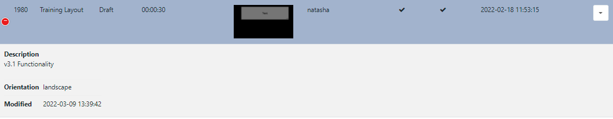

Navigating the CMS
All pages within the CMS are categorised into sections and accessible from the CMS main menu for all Users.
The menu will only show the sections/pages which have been Feature enabled for the logged in User to access.
Select where this menu can be placed, vertically on the left hand side or horizontally along the top of the CMS, from the User Preference settings!
Click on Dashboard to take you back to your User Dashboard homepage.
Grids
The CMS presents many of the entities, Layouts, Media and Displays for example, as tabular data in Grids. These grids have a number of elements that combine to create a flexible administration tool that is easy to read and understand.
The following screenshot shows the Layout Grid as an example, annotated with each of its elements:

-
Action Buttons
Common Action buttons for each page, such as Add Layout, are located in the top right of grids for ease of access across the CMS.
-
Tabs
Tabs provide filtering options to make finding items easier. Use the Advanced tab to access further filtering options:
-
Filters
Use the multiple filter fields to restrict criteria for returned results. For example all Layouts belonging to a particular Owner can be the only results shown in the grid.
Use the checkbox to apply advanced filtering options for Names using Regex. Provide AND/OR criteria using comma separated terms!
-
Folders
Folders are used to organise, search and easily Share User objects with other Users/User Groups.
- Click on a Folder/sub-folder to search the contents of only the selected Folder and return results based on any filters applied.
or
- Tick All Folders to include searching in the Root Folder and return results based on any filters applied.
Click the Folders menu to toggle on/off from view. When the Folder tree is hidden from view, the file path for the selected folder will be shown!
-
Results
Returned results are shown in columns.
Most columns can be sorted by default. Where the column has an up or down arrow the Shift key can be used to multi-sort the column!
Use the Column Visibility button to see available columns.
- Select/de-select which columns should be visible in the data table:
If too many columns have been selected to fit your screen size additional rows will be hidden. These can be viewed by clicking on the + icon at the beginning of the row:

-
Row Menu
Select an item and use the row menu to access a list of shortcuts and actions:
Row menu contents for items will differ dependent on the page selected!
Multi-select - With Selected
At the bottom of selected grids a With Selected option is available to multi-select rows to easily perform bulk actions:

-
Edit Tags
This function allows you to add new Tags in bulk with the option of also removing any existing Tags from multiple selections:

-
Share
Use to edit multiple Sharing options for selected items.
Elements that are shown with an indeterminate status
-are the result of a difference in options already set. Any changes made here will be applied to all selected elements.Example scenario:
Two Layouts are selected which already have the following Share options applied:
Layout 1 - view 1, Edit 0, Delete 0
Layout 2 - View 1, Edit 1, Delete 0
When multi-selected it would show the following:
View 1, Edit -, Delete 0
A User makes changes and toggles to:
View 0, Edit -, Delete 1 (leaving Edit in its current status)
The two Layouts would now have the following Share options set:
Layout 1 - View 0, Edit 0, Delete 0
Layout 2 - View 0, Edit 1, Delete 1
Available multi-select options are dependent on the page selected!
Forms
The CMS presents most transactions (actions that add/edit or delete in some way) using Forms.
The screenshot below gives an example of a how a form may look using the Edit Layout form:
-
Tabs
Forms may only have one or could have multiple tabs which provide further details and options to Users.
Folders
Folders are used to organise, search and easily Share User objects with other Users/User Groups.
Click on Select Folder and select/create the destination folder to save the item into.
Right click a Folder/sub-folder to view further options in the Folder Menu.
Items that are saved in Folders will inherit the View, Edit, Delete Share options that have been applied to the destination Folder for User/User Group access!
Form Fields
Each Form has fields that require completion as well as optional fields.
Each field has a title that explains what the field represents and help text for additional guidance.
Check Boxes
Options which can be enabled/disabled are presented with check boxes.
Forms accessed from a row menu may contain an ‘auto submit capability’, which when selected allows for forms to be automatically submitted.
Buttons
Every form has a button bar at the bottom to commit or cancel the additions/edits they have made.
Most forms also include a Help button, which provides a link to sections of this User Manual for additional guidance.
Automatic Submission of Forms
Selected actions, such as, Checkout from the Layouts grid Check Licence and Authorise from the Displays grid or Clear Cache from the Modules grid, allow for Forms to be automatically submitted by clicking on the action from the row menu.
Actions that have an ‘auto submit’ capability will clearly display a checkbox option to enable on the form:
Once saved, this particular action will be automatically submitted the next time it is selected.
Forms that you have enabled to ‘auto submit’ can be reset from your User Profile settings.